기계설계산업기사 (2017-03-05 기출문제)
1과목: 기계가공법 및 안전관리
1. 기어 절삭기에서 창성법으로 치형을 가공하는 공구가 아닌 것은?
- 호브(hob)
- 브로치(broach)
- 래크 커터 (rack cutter)
- 피니언 커터 (pinion cutter)
(정답률: 78%)

2. 드릴작업에 대한 설명으로 적절하지 않은 것은?
- 드릴작업은 항상 시작할 때 보다 끝날 때 이송을 빠르게 한다.
- 지름이 큰 드릴을 사용할 때는 바이스를 테이블에 고정한다.
- 드릴은 사용 전에 점검하고 마모나 균열이 있는 것은 사용하지 않는다.
- 드릴이나 드릴 소켓을 뽑을 때는 전용공구를 사용하고 해머 등으로 두드리지 않는다
(정답률: 87%)
3. 절삭공구의 절삭면에 평행하게 마모되는 현상은?
- 치핑(chipping)
- 플랭크 마모(flank wear)
- 크레이터 마모(creater wear)
- 온도 파손(temperature failure)
(정답률: 75%)
4. CNC기계의 움직임을 전기적인 신호로 속도와 위치를 피드백하는 장치는?
- 리졸버 (resolver)
- 컨트롤러 (controller)
- 볼 스크루(ball screw)
- 패리티 체크(parity-check)
(정답률: 68%)
5. 연삭 숫돌의 표시에 대한 설명이 옳은 것은?
- 연삭입자 C는 갈색 알루미나를 의미한다.
- 결합제 R은 레지노이드 결합제를 의미한다.
- 연삭 숫돌의 입도 #100이 #300보다 입자의 크기가 크다
- 결합도 K 이하는 경한 숫돌, L ~ O는 중간 정도 숫돌, P이상은 연한 숫돌이다.
(정답률: 64%)
6. 드릴 머신으로서 할 수 없는 작업은?
- 널링
- 스폿 페이싱
- 카운터 보링
- 카운터 싱킹
(정답률: 84%)
7. 나사연삭기의 연삭방법이 아닌 것은?
- 다인 나사연삭 방법
- 단식 나사연삭 방법
- 역식 나사연삭 방법
- 센터리스 나사연삭 방법
(정답률: 51%)
8. 20℃에서 20mm인 게이지 블록이 손과 접촉 후 온도가 36℃가 되었을 때, 게이지에 생긴 오차는 몇 mm인가? (단, 선팽창계수는 1.0 × 10-6/℃이다.)
- 3.2×10-4
- 3.2×10-3
- 6.4×10-4
- 6.4×10-3
(정답률: 46%)
9. 절삭공작기계가 아닌 것은?
- 선반
- 연삭기
- 플레이너
- 굽힘 프레스
(정답률: 85%)
10. 선반에서 맨드릴(mandrel)의 종류가 아닌 것은?
- 갱 맨드릴
- 나사 맨드릴
- 이동식 맨드릴
- 테이퍼 맨드릴
(정답률: 43%)
11. 구멍가공을 하기 위해서 가공물을 고정시키고 드릴이 가공 위치로 이동할 수 있도록 제작된 드릴링 머신은?
- 다두 드릴링 머신
- 다축 드릴링 머신
- 탁상 드릴링 머신
- 레이디얼 드릴링 머신
(정답률: 64%)
12. 일감에서 회전운동과 이송을 주며, 숫돌을 일감표면에 약한 압력으로 눌러 대고 다듬질할 면에 따라 매우 작고 빠른 진동을 주어 가공하는 방법은?
- 래핑
- 드레싱
- 드릴링
- 슈퍼 피니싱
(정답률: 76%)
13. 선반을 설계할 때 고려할 사항으로 틀린 것은?
- 고장이 적고 기계효율이 좋을 것
- 취급이 간단하고 수리가 용이할 것
- 강력 절삭이 되고 절삭 능률이 클 것
- 기계적 마모가 높고, 가격이 저렴할 것
(정답률: 87%)
14. 선반의 주요 구조부가 아닌 것은?
- 베드
- 심압대
- 주축대
- 회전 테이블
(정답률: 80%)
15. 그림에서 플러그 게이지의 기울기가 0.⑤일 때. M2의 길이 [mm]는? (단, 그림의 치수단위는 mm이다.)
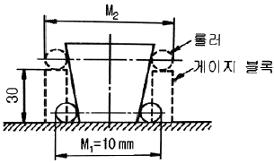
- 10.5
- 11.5
- 13
- 16
(정답률: 45%)
16. 삼각함수에 의하여 각도를 길이로 계산하여 간접적으로 각도를 구하는 방법으로, 블록게이지와 함께 사용하는 측정기는?
- 사인 바
- 베벨 각도기
- 오토 콜리메이터
- 콤비네이션 세트
(정답률: 85%)
17. 상향절삭과 하향절삭에 대한 설명으로 틀린 것은?
- 하향절삭은 상향절삭보다 표면거칠기가 우수하다,
- 상향절삭은 하향절삭에 비해 공구의 수명이 짧다,
- 상향절삭은 하향절삭과는 달리 백래시 제거장치가 필요하다,
- 상향절삭은 하향절삭할 때보다 가공물을 견고하게 고정하여야한다,
(정답률: 79%)
18. 주축의 회전운동을 직선 왕복운동으로 변화시킬 때 사용하는 밀링 부속장치는?
- 바이스
- 분할대
- 슬로팅 장치
- 래크 절삭 장치
(정답률: 66%)
19. 밀링작업의 단식 분할법에 원주를 15등분 하려고 한다. 이 때 분할대 크랭크의 회전수를 구하고, 15구멍열 분할판을 몇 구멍씩 보내면 되는가?
- l회전에 10구멍씩
- 2회전에 10구멍씩
- 3회전에 10구멍씩
- 4회전에 10구멍씩
(정답률: 58%)
20. 일반적인 손다듬질 작업 공정순서로 옳은 것은?
- 정 → 줄 → 스크레이퍼 → 쇠톱
- 줄 → 스크레이퍼 → 쇠톱 → 정
- 쇠톱 → 정 → 줄 → 스크레이퍼
- 스크레이퍼 → 정 → 쇠톱 → 줄
(정답률: 75%)
2과목: 기계제도
21. 그림과 같이 수직 원통을 30° 정도 경사지게 일직선으로 자른 경우의 전개도로 가장 적합한 형상은?
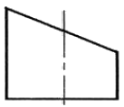
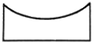
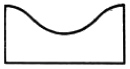
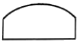
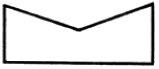
(정답률: 55%)
22. SM20C의 재료기호에서 탄소 함유랑은 몇 %정도인가?
- 0.18 ~ 0.23 %
- 0.2 ~ 0.3 %
- 2.0 ~ 3.0 %
- 18 ~ 23%
(정답률: 69%)
23. 다음 그럼에서 “A"의 치수는 얼마인가?
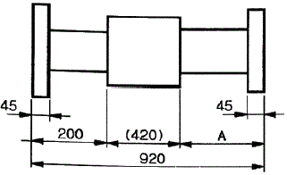
- 200
- 225
- 250
- 300
(정답률: 87%)
24. 대상물의 일부를 파단한 경계 또는 일부를 떼어낸 경계를 표시하는 선으로 옳은 것은?
- 가는 1점 쇄선
- 가는 2점 쇄선
- 가는 1점 쇄선으로 끝부문 및 방향이 변하는 부분을 굵게 한 선
- 불규칙한 파형의 가는 실선
(정답률: 67%)
25. 보기는 제3각법 정투상도로 그린 그림이다. 정면도로 가장 적합한 투상도는?
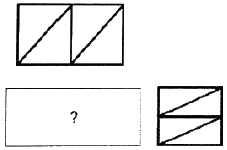
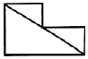
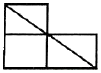
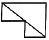
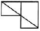
(정답률: 66%)
26. 도면 작성 시 가는 실선을 사용하는 경우가 아닌 것은?
- 특별히 범위나 영역을 나타내기 위한 틀의 선
- 반복되는 자세한 모양의 생략을 나타내는 선
- 테이퍼가 진 모양을 설명하기 위해 표시하는 선
- 소재의 굽은 부분이나 가공 공정을 표시하는 선
(정답률: 48%)
27. 그림은 맞물리는 어떤 기어를 나타낸 간략도이다. 이 기어는 무엇인가?
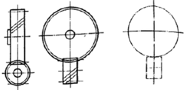
- 스퍼기어
- 헬리컬 기어
- 나사 기어
- 스파이럴 베벨기어
(정답률: 54%)
28. 최대 실체 공차방식을 적용할 때 공차붙이 형체와 그 데이텀 형체 두 곳에 함께 적용하는 경우로 옳 게 표현한 것은?
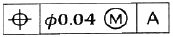
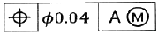
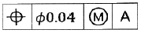
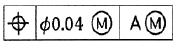
(정답률: 53%)
29. 나사의 표시법 중 관용 평행나사 “A"급을 표시하는 방법으로 옳은 것은?
- Rc 1/2 A
- G 1/2 A
- A Rc 1/2
- A G 1/2
(정답률: 67%)
30. 보기와 같은 용접기호의 설명으로 옳은 것은?
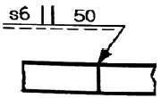
- 화살표쪽 에서 50mm 용접길이의 맞대기 용접
- 화살표 반대쪽에서 50mm 용접길이의 맞대기 용접
- 화실표 쪽에서 두께가 6mm인 필릿 용접
- 화실표 반대쪽에서 두께가 6mm인 필릿 용접
(정답률: 72%)
31. 가공방법의 표시 기호에서 “SPBR"은 무슨 가공인가?
- 기어 셰이빙
- 액체 호닝
- 배럴 연마
- 훗 블라스팅
(정답률: 76%)
32. “2줄 M20 × 2”와 같은 나사 표시 기호에서 리드는 얼마인가?
- 5 mm
- 2 mm
- 3 mm
- 4 mm
(정답률: 76%)
33. 바퀴의 암(arm), 형강 등과 같은 제품을 단면을 나타낼 때, 전단면을 90°회전하거나 절단할 곳의 전후를 끊어서 그 사이에 단면도를 그리는 방법은?
- 전단면도
- 부문 단면도
- 계단 단면도
- 회전도시 단면도
(정답률: 84%)
34. 다음 중 합금 공구강의 재질 기호가 아닌 것은?
- STC 60
- STD 12
- STF 6
- STS 21
(정답률: 45%)
35. 다음 중 가는 실선으로 나타내지 않는 선은?
- 지시선
- 치수선
- 해칭선
- 피치선
(정답률: 77%)
36. 그림과 같은 입체도에서 화살표 방향 투상도로 가장 적함한 것은?
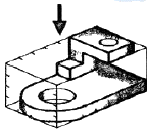
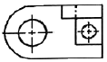
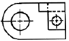
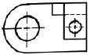
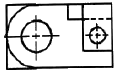
(정답률: 80%)
37. 보기는 제3각법 정투상도로 그린 그림이다. 우측면도로 가장 적합한 것은?
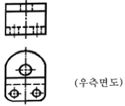
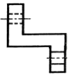
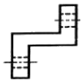
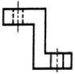
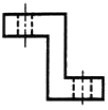
(정답률: 72%)
38. 다음과 같은 I 형강 재료의 표시법으로 옳은 것은?
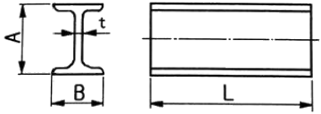
- I AxBxt - L
- txl AxB - L
- L - IxAxBxt
- I BxAxt - L
(정답률: 80%)
39. 체인 스프로킷 휠의 피치원 지름을 나타내는 선의 종류는?
- 가는 실선
- 가는 1점 쇄선
- 가는 2점 쇄선
- 굵은 1점 쇄선
(정답률: 76%)
40. 구멍의 치수는
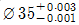
, 축의 치수는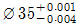
일 때. 최대 틈새는?- 0.004
- 0.0⑤
- 0.007
- 0.009
(정답률: 83%)
3과목: 기계설계 및 기계재료
41. 담금질한 강재의 잔류 오스테나이트를 제거하며, 치수변화 등을 방지하는 목적으로 0℃ 이하에서 열처리하는 방법은?
- 저온뜨임
- 심냉처리
- 마템퍼링
- 용체화처리
(정답률: 82%)
42. 열간 가공과 냉간 가공을 구별하는 온도는?
- 포정 온도
- 공석 온도
- 공정 온도
- 재결정 온도
(정답률: 76%)
43. 소결합금으로 된 공구강은?
- 초경합금
- 스프링강
- 탄소공구강
- 기계구조용강
(정답률: 75%)
44. 공구 재료가 갖추어야 할 일반적 성질 중 틀린 것은?
- 인성이 클 것
- 취성이 클 것
- 고온경도가 클 것
- 내마멸성이 클 것
(정답률: 76%)
45. 플라스틱 재료의 일반적인 성질을 설명한 것 중 틀린 것은?
- 열에 약하다.
- 성형성이 좋다.
- 표면경도가 높다.
- 대부분 전기 절연성이 좋다.
(정답률: 77%)
46. 주철에서 탄소강과 같이 강인성이 우수한 조직을 만들 수 있는 흑연 모양은?
- 편상흑연
- 괴상흑연
- 구상흑연
- 공정상흑연
(정답률: 81%)
47. 구리합금 중 최고의 강도를 가진 석출 경화성 합금으로 내열성, 내식성이 우수하여 베어링 및 고급 스프링 재료로 이용되는 청동은?
- 납청동
- 인청동
- 베릴륨 청동
- 알루미늄 청동
(정답률: 65%)
48. 다음 중 발전기, 전동기, 변압기 등의 철심 재료에 가장 적합한 특수강은?
- 규소강
- 베어링강
- 스프링강
- 고속도공구강
(정답률: 57%)
49. 알루미늄의 성질로 틀린 것은?
- 비중이 악 7.8이다,
- 면심입방격자 구조이다,
- 용융점은 악 660℃이다,
- 대기중에서는 내식성이 좋다,
(정답률: 61%)
50. 담금질 조직 중에 냉각속도가 가장 빠를 때 나타나는 조직은?
- 소르바이트
- 마텐자이트
- 오스테나이트
- 트루스타이트
(정답률: 70%)
51. 잇수 32, 피치 12.7mm, 회전수 500rpm의 스프로킷 휠에 50번 롤러 체인을 사용하였을 경우 전달동력은 약 몇 kW 인가? (단, 50번 롤러 체인의 파단하중은 22.10kN, 안전율은 15이다.)
- 7.8
- 6.4
- 5.6
- 5.0
(정답률: 19%)
52. 0.45 t의 물체를 지지하는 아이 볼트에서 볼트의 허용인장응력이 48MPa라 할 때, 다음 미터나사 중 가장 적합한 것은? (단, 나사 바깥지름은 골지름의 1.25배로 가정하고. 적합한 사양 중 가장 작은 크기를 선정한다.)
- M14
- M16
- M18
- M20
(정답률: 35%)
53. 원형 봉에 비틀림 모멘트를 가할 때 비틀림 변형이 생기는데, 이 때 나타나는 탄성을 이용한 스프링은?
- 토션바
- 벌류트 스프링
- 와이어 스프링
- 비틀림 코일스프링
(정답률: 63%)
54. 용접이음의 단점에 속하지 않는 것은?
- 내부 결함이 생기기 쉽고 정확한 검사가 어럽다,
- 용접공의 기능에 따라 용접부의 강도가 좌우된다,
- 다른 이음작업과 비교하여 작업 공정이 많은 편이다,
- 잔류응력이 발생하기 쉬워서 이를 제거하는 작업이 필요하다,
(정답률: 77%)
55. 볼 베어링에서 수명에 대한 설명으로 옳은 것은?
- 베어링에 작용하는 하중의 3승에 비례한다
- 베어링에 작용하는 하중의 3승에 반비례한다,
- 베어링에 작용하는 하중의 10.3승에 비례한다,
- 베어링에 작용하는 하중의 10/3승에 반비례한다,
(정답률: 66%)
56. 전달동력 2.4 kW, 회전수 1800 rpm을 전달하는 축의 지름은 악 몇 mm이상으로 해야 하는가? (단, 축의 허용전단응력은 20MpaOl다.)
- 20
- 12
- 15
- 17
(정답률: 37%)
57. 묻힘 키(sunk key)에 생기는 전단응력을 τ, 압축응력을 σc 라고 할 때
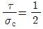
이면 키 폭 b와 높이 h의 관계식으로 옳은 것은? (단, 키 홈의 높이는 키 높이의 1/2이다.)- b = h
- h = b/4
- b = h/2
- b = 2h
(정답률: 38%)
58. 기어의 피치원 지름이 무한대로 회전운동을 직선운동으로 바꿀 때 사용하는 기어는?
- 베벨 기어
- 헬리컬 기어
- 래크와 피니언
- 웜 기어
(정답률: 72%)
59. 주로 회전운동을 왕복운동으로 변환시키는 데 사용하는 기계요소로서 내연기관의 개폐기구 등에 사용되는 것은?
- 마찰차(friction wheel)
- 클러치(clutch)
- 기어(gear)
- 캠(cam)
(정답률: 63%)
60. 드럼의 지름 600mm인 브레이크 시스템에서 98.1 Nm의 제동 토크를 발성시키고자 할 때 블록을 드럼에 밀어붙이는 힘은 악 몇 KN인가? (단, 접촉부 마찰계수는 0.3이다.)
- 0.54
- 1.09
- 1.51
- 1.96
(정답률: 44%)
4과목: 컴퓨터응용설계
61. 다음 중 기본적인 2차원 동차 좌표 변환으로 몰 수 없는 것은?
- extrusion
- translation
- rotation
- reflection
(정답률: 53%)
62. CAD 소프트웨어가 반드시 갖추고 있어야 할 기능으로 거리가 먼 것은?
- 화면 제어 기능
- 치수 기입 기능
- 도형 편집 기능
- 인터넷 기능
(정답률: 86%)
63. x2 + y2- 25 = 0인 원 이 있다. 원 상의 점(3,4)에서 접선의 방정식으로 옳은 것은?
- 3x + 4y - 25 = 0
- 3x + 4y - 50 = 0
- 4x + 3y - 25 = 0
- 4x + 3y - 50 = 0
(정답률: 63%)
64. (x+7)2 + (y-4)2 = 64 인 원의 중심좌표와 반지름을 구하면?
- 중심좌표 (-7,4), 반지름 8
- 중심좌표 (7, -4), 반지름 8
- 중심좌표 (-7,4), 반지름 64
- 중심좌표 (7, -4), 반지름 64
(정답률: 64%)
65. 슬리드 모델링 방식 중 B-rep과 비교한 CSG의 특징이 아닌 것은?
- 불리언 연산자 사용으로 명확한 모델생성이 쉽다.
- 데이터가 간결하여 필요 메모리가 적다,
- 형상 수정이 용이하고 체적, 중량을 계산할 수 있다,
- 투상도, 투시도, 전개도, 표면적 계산이 용이하다,
(정답률: 54%)
66. 서피스 모델에서 사용되는 기본곡면의 종류에 속하지 않는 것은?
- Revolved surface
- Topology surface
- Sweep surface
- Bezier surface
(정답률: 60%)
67. 솔리드 모델링 기법의 일종인 특징형상 모델링 기법에 대한 설명으로 옳지 않은 것은?
- 모델링 입력을 설계자 또는 제작자에게 익숙한 형상 단위로 하자는 것이다,
- 각각의 형상단위는 주요 치수를 파라미터로 입력하도록 되어있다,
- 전형적인 특징현상은 모떼기, 구멍, 필릿, 슬롯 등이 있다,
- 사용 분야와 사용자에 관계없이 특징형상의 종류가 항상 일정하다는 것이 장점이다,
(정답률: 48%)
68. 곡선들 중에서 원추단면 곡선(conic section curve)이 아닌 것은?
- 포물선(paravola)
- 타원(ellipse)
- 대수곡선 (algebraic curve)
- 쌍곡선(hyperbola)
(정답률: 69%)
69. 동차좌표(homogeneous coordinate)에 의한 표현을 바르게 설명한 것은?
- N차원의 벡터를 N-l차원의 벡터로 표현한 것이다.
- N차원의 벡터를 N+l차원의 벡터로 표현한 것이다.
- N차원의 벡터를 N(N-l)차원의 벡터로 표현 한 것이다.
- N차원의 벡터를 N(N+l)차원의 벡터로 표현 한 것이다.
(정답률: 44%)
70. 플로터 형식에 있어서 펜(pen)식과 래스터(raster)식으로 구분할 때 다음 중 펜식 플로터에 속하는 것은?
- 정전식
- 잉크셋식
- 리니어 모터식
- 열전사식
(정답률: 47%)
71. 3차원 형상을 표현하는데 있어서 사용하는 Z-buffer 방법은 무엇을 의미하는가?
- 음영을 나타내기 위한 방법
- 은선 또는 은면을 제거하기 위한 방법
- view-prot에 모델을 나타내기 위한 방법
- 두 곡면을 부드럽게 연결하기 위한 방법
(정답률: 56%)
72. 공학적 해석(부피, 무게중심, 관성모멘트 등의 계산)을 적용할 때 쓰는 가장 적합한 모델은?
- 솔리드 모델
- 서피스 모델
- 와이어프레임 모델
- 데이터 모델
(정답률: 80%)
73. 컬러 잉크젯 플로터에 사용되는 기본적인 색상이 아닌 것은?
- magenta
- black
- cyan
- green
(정답률: 51%)
74. 반지름이 R이고 피치(pitch)가 p인 나사의 나선(helix)을 나선의 회전각(x축과 이루는 각) θ에 대한 매개변수식으로 나타낸 것으로 옳은 것은? (단,
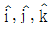
는 각각 x. y, z축 방향의 단위벡터이다.)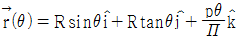
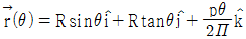
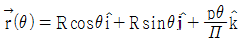
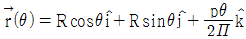
(정답률: 33%)
75. 지정된 점(정점 또는 조정점)을 모두 통과하도록 고안된 곡선은?
- Bezier curve
- B-spline curve
- Spline curve
- NURBS curve
(정답률: 57%)
76. CAD를 이용한 설계 과정이 종래의 제도판에서 제도기를 이용하여 2차원적으로 작업하는 설계과정과의 차이점에 해당하지 않는 것은?
- 개념 설계 단계를 거치는 점
- 전산화된 데이터베이스를 활용한다는 점
- 컴퓨터에 의한 해석을 용이하게 할 수 있다는 점
- 형상을 수치 데이터화하여 데이터베이스에 저장한다는 점
(정답률: 72%)
77. 베지어(Bezier) 곡선에 관한 설명 중 옳지 않은 것은?
- 곡선은 양단의 끝점을 통과한다,
- 1개의 정점 변화는 곡선 전체에 영항을 미친다,
- n개의 정점에 의해서 정의된 곡선은 (n+1)차 곡선이다,
- 곡선은 정점을 연결하는 다각형의 내측에 존재한다,
(정답률: 73%)
78. 다음과 같은 특징을 가진 디스플레이는?
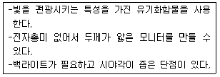
- PDP
- TFT-LCD
- CRT
- OLED
(정답률: 59%)
79. 모델링과 관계된 용어의 설명으로 잘못된 것은?
- 스위핑(Sweeping) : 하나의 2차원 단면형상을 입력하고 이를 안내곡선을 따라 이동시켜 입체를 생성하는 것
- 스키닝(Skinning) : 원하는 경로상에 여러개의 단면 형상을 위치시키고 이를 덮는 입체를 생성하는 것
- 리프팅(Lifting) : 주어진 물체 특정면의 전부 또는 일부를 원하는 방항으로 움직여서 물체가 그 방항으로 늘어난 효과를 갖도록 하는 것
- 블랜딩(Blending) : 주어진 형상을 국부적으로 변화 시키는 방법으로 접하는 곡면을 예리한 모서리로 처리하는 것
(정답률: 72%)
80. 다음 중 데이터의 전송속도를 나타내는 단위는?
- BPS
- MIPS
- DPI
- RPM
(정답률: 64%)